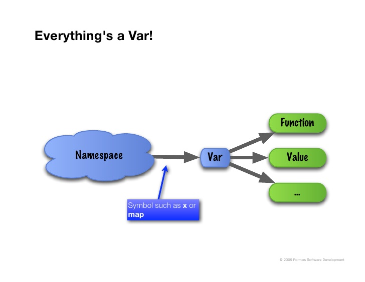

使用 REPL 调试 Clojure 项目（Metabase）
开发工具
Intellij IDEA + Cursive
安装 IDEA 社区版即可，并安装插件 Cursive。

Cursive 插件按键冲突
比如我会用组合键⌘ + [浏览代码，与 Cursive 插件的按键冲突。可以取消 Cursive 的这个组合键。

Emacs
Added 2020-07-10
参考：How to Use Emacs, an Excellent Clojure Editor
实践Metabase代码库失败：在REPL中执行(-main)直接挂了，待研究。TBD
实践
Metabase
接触 Clojure 是因为 Metabase 这个项目 https://github.com/metabase/metabase 。以 Metabase 为例，说明如何调试 Clojure 项目。
Metabase 由前后端两部分组成，后端是由 Clojure 写的 REST API 项目。启动前端工程，需要在前端界面上触发 API 请求。
yarn build-hot
参考
- Metabase developers-guide https://github.com/metabase/metabase/blob/master/docs/developers-guide.md
REPL 调试 Clojure 项目
新建一个 Clojure REPL 配置。

展开右下角的 REPL 子窗口，Run REPL for metabase-core。（注意，此时，项目中的 clojure namespace 并没有实际加载。代码编辑区运行 Clojure 函数，会报错，Error: :namespace-not-found）

metabase.core.clj 是整个项目的入口文件。执行 Load File in REPL。插件自动把所有 metabase.core 的依赖加载进 REPL 中。

Load 成功。

入口函数-main并不会自动运行的。调用-main并发送函数到 REPL 中执行。

print 调试，改完代码即可生效。如下，加入打印变量函数，执行Load File in REPL/Sync Files in REPL/Send xxx to REPL让函数生效。

REPL 会阻塞
会有发送函数到 REPL 中执行，而没有反应的情况。需要注意，REPL 会阻塞。
(.join (server/instance))) Jetty Server 阻塞住当前线程。所以其他函数在 REPL 中被阻塞了。
Metabase 入口代码：
(defn- start-normally []
(log/info (trs "Starting Metabase in STANDALONE mode"))
(try
;; launch embedded webserver async
(server/start-web-server! handler/app)
;; run our initialization process
(init!)
;; Ok, now block forever while Jetty does its thing
(when (config/config-bool :mb-jetty-join)
(.join (server/instance)))
(catch Throwable e
(log/error e (trs "Metabase Initialization FAILED"))
(System/exit 1))))
(defn -main
"Launch Metabase in standalone mode."
[& [cmd & args]]
(maybe-enable-tracing)
(if cmd
(run-cmd cmd args) ; run a command like `java -jar metabase.jar migrate release-locks` or `lein run migrate release-locks`
(start-normally))) ; with no command line args just start Metabase normally
解决办法，就是不要让代码阻塞住当前线程、REPL。
参考：
- The Cursive REPL https://cursive-ide.com/userguide/repl.html
metabase run-with-repl
Added 2020-07-10
Cursive中也支持指定Profiles。

这个profile的作用是设置:mb-jetty-join为false，不阻塞REPL主线程。另外启动metabase.core/-main。
project.clj
...
:run-with-repl
[:exclude-tests
:include-all-drivers
{:env
{:mb-jetty-join "false"}
:repl-options
{:init (do (require 'metabase.core)
(metabase.core/-main))
:timeout 60000}}]
...
这种方式有一个缺点，modules/drivers下的（源码）驱动并不会成功加载，调试src/目录下的源码是没问题的。具体报错如下：（其中impala是driver名字）
Could not locate metabase/driver/impala__init.class, metabase/driver/impala.clj or metabase/driver/impala.cljc on classpath.
试验了下，plugins目录下的driver是可以成功加载的。
开发模式下，按照加载机制，如果plugins下的driver与modules/drivers下的driver重名，会被后者覆盖掉。其实这是个bug，值没取对，导致两个目录下的同一个driver，重复加载并覆盖。（之前还好奇为何要加载两遍driver）

总结，目前使用这种配置，调试Metabase核心包是没问题的，plugin driver建议放到plugins目录。Root Cause？
不用Cursive，直接运行lein run-with-repl可以自然加载modules/drivers下的driver源码。
Metabase Remote REPL
Added 2020-07-10
命令行中，lein run-with-repl Lein REPL会在本地生成一个.nrepl-port的文件，内含repl server的端口。
创建一个Remote REPL配置，让其引用.nrepl-port文件。上节如何调试plugin driver源码的问题就是解决了。

Clojure 动态性：#'
#'是 Clojure 里的一个reader macro，可以理解为一个语法糖。 https://en.wikibooks.org/wiki/Learning_Clojure/Reader_Macros
实际展开为var方法。
#'foo ; (var foo)
比如一个内置方法inc，以下两种写法都能用。
(inc 1)
=> 2
;; = ((var inc) 1)
(#'inc 1)
=> 2
两种写法的区别，打开一个REPL试试。
;; twice version 1
(defn twice [n] (* n 2.0))
=> #'user/twice
;; #'twice = (var twice) 定义simple-calc时编译器不会指向twice的内容内存地址，只是twice var的地址。
(def simple-calc #'twice)
=> #'user/simple-calc
(simple-calc 3)
=> 6.0
;; 定义simple-calc2时编译器指向twice的内容内存地址。
(def simple-calc2 twice)
=> #'user/simple-calc2
(simple-calc2 3)
=> 6.0
;; 更新了 twice 的内容，两个 simple-calc 的表现就不一样了
;; twice version 2
(defn twice [n] (* n 2))
=> #'user/twice
;; 结果随着twice的变动更新了
;; 每次运行 simple-calc，都会执行 (var twice)，保证取twice最新的内容内存地址。
(simple-calc 3)
=> 6
;; 结果没变。因为内部使用的还是编译前的twice的内容内存地址。
(simple-calc2 3)
=> 6.0
这个回答是很好的解释：
- Dynamic handler update in Clojure Ring/Compojure REPL https://stackoverflow.com/questions/28904260/dynamic-handler-update-in-clojure-ring-compojure-repl
其实 Clojure 中最常用到的就是Var类型了，使用defn/def定义方法、变量都是定义Var类型，Var类型可以理解为一个容器，指向Function、Value。Clojure之所以如此动态，就是因为Var类型指向的内容可以随时更新。参考以下：

Vars (instances of
clojure.lang.Var) are one of four constructs the Clojure language gives us to maintain a persistent reference to a changing value.3 In fact, of the four constructs (vars, atoms, refs, and agents), they’re probably the one you use the most without even realizing it! Every time something is defined using the special formdef(or thedefnmacro which usesdefinternally), Clojure creates a new var and places the value or function inside…Having this mutable container act as a layer of indirection between a caller and the function being called is what allows Clojure to be so dynamic at runtime. If all invocations of a particular function are routed through this container, we’re given the opportunity to dynamically update the behavior of our program by changing or altering what is inside…
Metabase 代码里就有很多#'的使用，比如这里定义的HTTP请求的middleware，保证开发时随时更改随时生效，提高开发效率。
;; default-middleware是一个Vector（数组），每个元素都是一个含相同方法签名的方法。
(def default-middleware
"The default set of middleware applied to queries ran via `process-query`."
[#'mbql-to-native/mbql->native
#'check-features/check-features
#'optimize-datetime-filters/optimize-datetime-filters
...])
(def ^{:arglists '([query] [query context])} process-query-async
"Process a query asynchronously, returning a `core.async` channel that is called with the final result (or Throwable)."
(base-qp default-middleware))
;; In REPL-based dev rebuild the QP every time it is called; this way we don't need to reload this namespace when
;; middleware is changed. Outside of dev only build the QP once for performance/locality （build once? HOW?）
(defn- base-qp [middleware]
;; letfn与let类似，定义一个本地变量，letfn定义的是一个方法（变量）。
(letfn [(qp [] ;; qp 方法名 [] 入参
;; 将middleware数组合并成一个middleware，可以合并是因为方法签名是一致的
(qp.reducible/async-qp (qp.reducible/combine-middleware middleware)))]
(if config/is-dev?
(fn [& args]
(apply (qp) args))
(qp))))
总结
REPL 的方式调试代码还是蛮新奇的，对我来说。